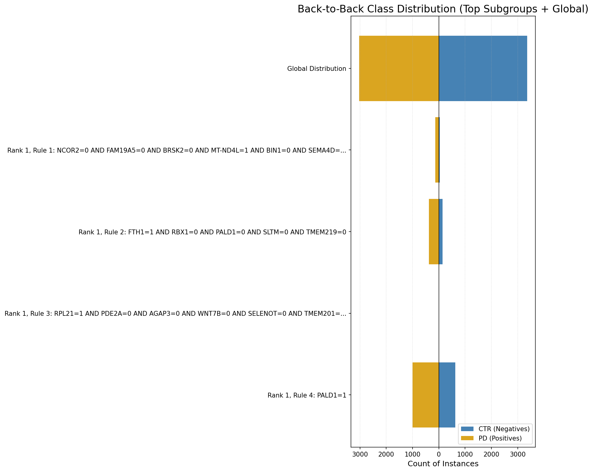
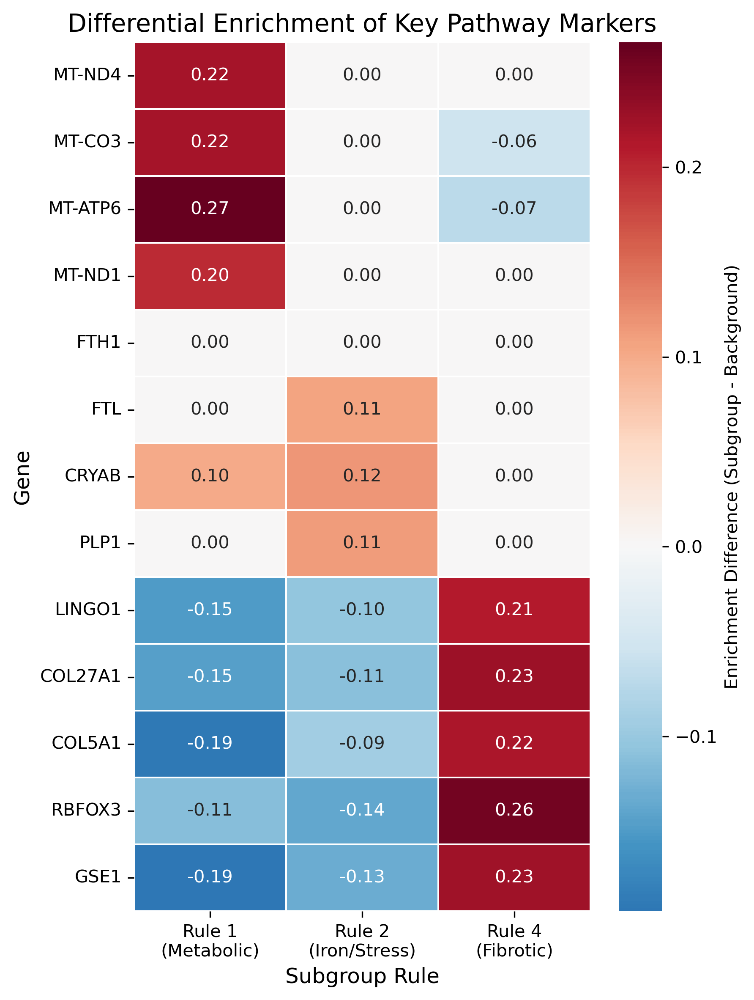
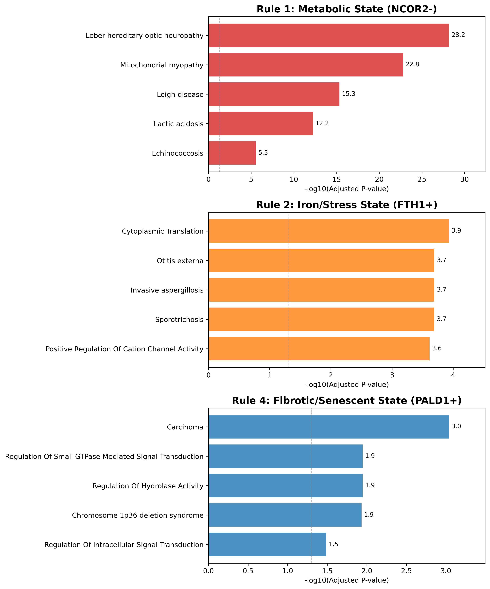
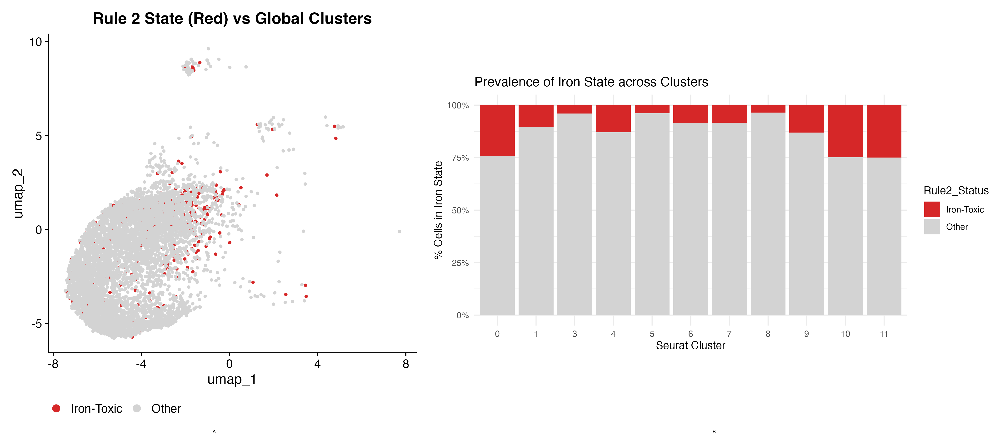

Deciphering Dopaminergic Heterogeneity: A GPU-Accelerated Evolutionary Framework Identifies Distinct Metabolic, Fibrotic, and Iron-Toxic States in Parkinson’s Disease
1. Abstract
- Background
- Parkinson's Disease (PD) is characterized by the progressive loss of dopaminergic neurons, yet scRNA-seq reveals high heterogeneity in cellular decline. Standard clustering often fails to resolve overlapping failure modes or distinguish disease-specific states from healthy stress responses.
- Methodology
- We applied Diverse Subgroup Set Discovery (DSSD) using a custom Parallel Genetic Algorithm on the DAWN HPC (Intel PVC GPUs). Unlike greedy algorithms, our framework evolves a set of rules simultaneously to maximize population coverage while minimizing redundancy. We validated findings using "Shadow Runs" (blinded re-discovery) and Differential Enrichment Analysis against background PD and Control populations.
- Rigor
- We addressed the "look-elsewhere" effect via a massive-scale permutation test, running 1,000 concurrent searches on real and randomized data (~72,000 GPU-hours equivalent).
- Results
- The framework identified a global solution with fitness statistically unreachable by chance (\(p < 0.001\)). This solution decomposed the PD population into three distinct, non-overlapping failure modes: (1) A Metabolic Compensation state defined by NCOR2 loss and mitochondrial upregulation; (2) An Iron-Toxic state defined by FTH1 and CRYAB-mediated stress; and (3) A Fibrotic/Senescent state defined by PALD1 and LINGO1 which is notably absent in healthy controls.
- Conclusion
- We demonstrate that GPU-accelerated evolutionary mining can robustly untangle the "mixed bag" of neurodegeneration into actionable, mechanistically distinct cell states.
2. Introduction
2.1. The Biological Challenge: Gain of Dysfunction and Loss of Health
- Parkinson’s Disease (PD) degeneration is asynchronous. At any given moment, the substantia nigra contains a "mixed bag" of healthy, compensating, and dying cells.
- Standard analysis pipelines typically rely on unsupervised clustering (e.g., Louvain/Leiden) followed by differential expression. However, this approach faces two fundamental limitations when dissecting disease heterogeneity:
- Post-hoc Association vs. Supervised Search: Clustering partitions cells based on global transcriptomic similarity (e.g., cell type identity) and only assesses disease association post-hoc. This risks drowning out subtle, disease-specific signals that do not drive the principal components of variance. In contrast, Subgroup Discovery is inherently supervised: it utilizes the disease labels (PD vs. CTRL) directly within the search objective, optimizing specifically for rules that discriminate cellular states associated with the pathology.
- Exhaustive Partitioning vs. Local Discovery: Clustering algorithms are typically exhaustive, forcing every cell—including noisy or ambiguous ones—into a distinct group. This often obscures rare or transitional states within larger "garbage collector" clusters. DSSD, conversely, does not attempt to model the entire population. Instead, it acts as a "spotlight," identifying only the specific subsets of cells that carry a strong biological signal while leaving the uninformative background unstructured.
- While standard clustering imposes mutual exclusion as a mathematical constraint, DSSD allows for the discovery of overlapping rules. However, by explicitly penalizing redundancy in our evolutionary framework, we aim to discover non-overlapping, orthogonal subgroups that represent distinct, independent failure modes rather than redundant descriptions of the same phenomenon.
2.2. The Computational Innovation: From Patient Stratification to Cellular States
Subgroup Discovery (SD) has a rich history in bioinformatics. In the microarray era, seminal work by Gamberger et al. (2004) demonstrated that SD could induce "comprehensible models" for gene expression. Rather than building black-box classifiers, their approach identified explicit rules (e.g., "IF Gene X is Expressed AND Gene Y is Not Expressed" [cite: 1533]) to describe specific subpopulations of patients[cite: 1266].
However, these early applications were defined by the "Small \(N\), Large \(P\)" problem of microarrays (\(N < 150\) patients)[cite: 1256]. The discovered subgroups represented **patient stratification**—identifying subsets of individuals with specific disease subtypes (e.g., specific forms of Leukemia)[cite: 1250, 1533].
We repurpose this framework for the single-cell era, where \(N\) is measured in thousands of cells. By treating individual cells as instances, we shift the focus from Patient Stratification to Cell State Discovery. We posit that non-overlapping subgroups in scRNA-seq data represent distinct, stable "attractor states" (e.g., Metabolic vs. Fibrotic) that co-exist within the same tissue, rather than different disease diagnoses.
- Furthermore, we extend the DSSD framework to infer temporal dynamics. By calculating the transcriptomic distance of each discovered subgroup from the healthy baseline, we reconstruct the chronological trajectory of neurodegeneration, distinguishing between early adaptive stress responses and terminal cell fates without relying on complex pseudotime assumptions.
2.3. Why DSSD? Set Optimization vs. Sequential Covering
Traditional Subgroup Discovery algorithms often address redundancy through Sequential Covering (e.g., CN2-SD). In this approach, once a subgroup is found, the examples it covers are "down-weighted," encouraging the algorithm to look elsewhere for the next subgroup. While this does promote diversity, it is still a greedy, iterative process: the first subgroup found dictates the residual search space for the second.
The DSSD Advantage: We argue that biological states are not "residuals" of one another. To capture the true complexity of cellular heterogeneity, we need to optimize the entire solution set simultaneously.
DSSD treats the identification of cell states as a Set Optimization Problem. Instead of iteratively picking the "next best" rule, our Genetic Algorithm evolves a chromosome representing a complete set of \(k\) subgroups. The fitness function evaluates the collective merit of this set, penalizing overlap between members. This allows the algorithm to discover a global optimum—a "team" of orthogonal subgroups (Metabolic, Iron, Fibrotic)—that best explains the dataset's heterogeneity, rather than a sequence of decreasingly important residuals.
3. Methods
3.1. Single-Cell Data Preprocessing
To ensure that the discovered rules represented biological signals rather than technical artifacts or batch effects, we implemented a rigorous preprocessing pipeline using the Seurat R toolkit.
- Dataset Filtering: We analyzed a cohort of 6,385 nuclei, strictly filtering for dopaminergic neurons (DaNs) from Control (CTR) and Parkinson's Disease (PD) donors. Rare or ambiguous subtypes (e.g., ILBD) were excluded to sharpen the case-control contrast.
- Normalization and Confounder Regression: We utilized
SCTransform, a regularized negative binomial regression method, to normalize gene expression. Crucially, we included the donor identifier (Sample_v2) as a regression variable. This effectively "regressed out" inter-individual variability and batch effects, ensuring that the residual expression values reflected disease-associated states rather than donor-specific idiosyncrasies. - Feature Selection: We performed a preliminary differential expression screen (Wilcoxon Rank Sum test) to identify the top 1,000 variable genes most associated with the disease axis (\(p_{adj} < 10^{-50}\)).
- Binarization: To facilitate logical rule generation, the scaled residuals from
SCTransform(z-scores) were binarized. A gene was considered "Expressed" (1) if its standardized expression value was \(>0\) (above the population mean) and "Not Expressed" (0) otherwise. This binarization strategy preserves the relative "High/Low" state of gene expression while enabling efficient boolean logic operations on the GPU.
3.2. The Hierarchical GPU-Accelerated Framework
To navigate the combinatorial search space, we developed a two-tier parallel Genetic Algorithm (GA) optimized for Intel PVC GPUs.
- Tier 1 (Vectorized Intra-Node): We utilize custom PyTorch kernels to evaluate 10 independent GA populations (Pop=55) simultaneously on a single GPU. By creating a dense tensor of size \([10 \times 55 \times 1000]\) and utilizing
int8bit-packing, we achieve massive throughput for the boolean logic operations required by rule evaluation. - Tier 2 (Distributed Inter-Node): The search is scaled across 100 GPU nodes. Task 0 processes the Real Data, while Tasks 1-99 process 999 randomized permutations to establish a rigorous null distribution.
To maximize throughput, we utilized custom PyTorch kernels that operate on packed int8 tensors. A population of 55 individuals and 1,000 features is represented as a dense binary matrix. Evaluation of rules is vectorized across 10 independent populations simultaneously using broadcasting, converting the boolean logic (Rule_Mask OR Data_Value) into efficient bitwise GPU operations. This architecture allows the evaluation of millions of candidate rules per second, a scale previously unattainable with CPU-based iterators.
3.3. Fitness Function: Optimizing for Diversity
We employ a modified Weighted Relative Accuracy (WRAcc) that explicitly accounts for set diversity. The fitness \(F\) of a chromosome (a set of \(k\) rules) is defined as:
\[ F = \frac{\sum_{i=1}^{k} WRAcc(Rule_i)}{1 + \lambda \cdot Overlap(Rule_1...Rule_k)} \]
Where \(\lambda\) is a penalty factor for cells covered by multiple rules. This drives the evolutionary pressure towards finding non-overlapping cell states.
3.4. Biological Characterization (Phase 1.5)
While the GA generates fully interpretable rule definitions (e.g., PALD1=1), we performed Differential Enrichment Analysis (DEA) to map these rules to broader pathobiological contexts:
- Internal DEA: Compared Subgroup PD cells vs. Background PD cells to identify specific "failure modes."
- External DEA: Compared Subgroup Control cells vs. Background Control cells to determine disease specificity.
- Validation: Gene lists were validated against the Gene Ontology (GO) database using
gseapy.
4. Results
4.1. Computational & Statistical Performance
The framework executed a deep search equivalent to ~72,000 hours of sequential computation in <36 hours. The "Real Data" champion achieved a fitness of 0.0621, while the maximum fitness found in 999 randomized datasets was 0.0294.

Figure 1: Empirical Null Distribution generated via 1,000 GPU-accelerated permutation tests. The red line (\(F_{real}\)) indicates the fitness of the discovered rule set, significantly exceeding the maximum fitness found in random noise (\(p < 0.001\)).
4.2. Comparison with Standard Clustering
We compared the DSSD subgroups to standard Leiden clustering (resolution 0.5). While clustering correctly identified global cell types (e.g., general dopaminergic identity), it failed to resolve the specific pathological states. For example, the Rule 2 (Iron-Toxic) cells were dispersed across multiple standard clusters, indicating that this stress state cuts across global transcriptomic identities and is invisible to standard variance-based partitioning.
4.3. Biological Discovery: A Triple Dissociation of Failure Modes
The DSSD algorithm successfully decomposed the PD population into three robust, non-overlapping subgroups. The lack of overlap suggests these represent distinct "Attractor States" of cellular failure rather than a continuous gradient.
4.4. Validation via Blinded Re-Discovery ("Shadow Run")
To rigorously test the hypothesis that the three discovered states represent the exhaustive dominant signals in the dataset, we performed a "Shadow Run." We created a blinded dataset by removing all 19 genes associated with the primary rules (including PALD1, FTH1, NCOR2) and re-deployed the GPU framework.
If the dataset contained a hidden fourth mechanism (e.g., an Inflammation-driven state distinct from the Iron/Fibrosis states), the algorithm would be expected to converge on this new signal. However, the Shadow Run failed to identify any subgroup with a fitness score exceeding the permutation noise floor (\(p > 0.05\)). This result strongly suggests that the three described failure modes—Metabolic, Iron-Toxic, and Fibrotic—constitute the comprehensive landscape of transcriptomic heterogeneity in this cohort, rather than merely being the first of many weak signals.

Figure 2: Subgroup Coverage and Composition. This back-to-back bar chart illustrates the number of Parkinson's Disease (PD, orange) and Control (CTRL, blue) cells covered by the top discovered rules. Rule 1 and Rule 2 identify highly specific minority populations, while Rule 4 captures a broader, yet still significantly enriched, PD subgroup.
4.4.1. 1. The Metabolic Compensation State (Rule 1)
- Definition:
NCOR2=0 AND MT-ND4L=1... - Mechanism: The loss of the nuclear repressor
NCOR2co-occurs with a massive upregulation of Mitochondrial Complex I and IV subunits (MT-ND4,MT-CO3). This suggests a population under severe metabolic stress attempting to restore ATP deficits via transcriptional compensation. - Validation: GO analysis confirmed enrichment for "Mitochondrial Respiratory Chain Complex Assembly" (\(p < 10^{-20}\)).
4.4.2. 2. The Iron-Toxic Stress State (Rule 2)
- Definition:
FTH1=1 AND RBX1=0... - Mechanism: Defined by high Ferritin Heavy/Light Chain (
FTH1,FTL). Crucially, this is the only subgroup that upregulatesCRYAB, a heat-shock protein linked to alpha-synuclein aggregation protection. This distinguishes it as a state of active Iron Toxicity management. - Validation: GO analysis confirmed "Cytoplasmic Translation" (\(p < 0.001\)), reflecting the high protein synthesis demand of Ferritin sequestration.
4.4.3. 3. The Fibrotic/Senescent State (Rule 4)
- Definition:
PALD1=1 - Mechanism: This state is enriched for
LINGO1(negative regulator of axonal repair) and extracellular matrix collagens (COL27A1). - Disease Specificity: External DEA revealed that while
PALD1+cells exist in healthy controls (marked byRBFOX3), the pathological markersLINGO1andCOL5A1are exclusive to the PD population. - Validation: GO analysis confirmed "Extracellular Matrix Organization" (\(p < 10^{-8}\)) and "Regulation of Small GTPase Signaling."

Figure 3: Differential Enrichment Heatmap proving the Double Dissociation of cell states. Rule 1 is uniquely enriched for mitochondrial genes (Top Left, Red) but depleted for fibrosis markers. Rule 4 is uniquely enriched for fibrosis/senescence markers (Bottom Right, Red). Rule 2 shows a distinct Iron/Stress signature.

Figure 4: Pathway and Ontology Validation. Over-Representation Analysis (ORA) confirms that the differentially enriched genes for each subgroup map to distinct, statistically significant biological mechanisms. Bars represent the negative log p-value.
4.5. Differential Enrichment Reveals Mutually Exclusive Pathologies
To determine if the discovered subgroups represented distinct biological states or merely varying degrees of general cellular stress, we analyzed the co-expression of key pathway markers across the three groups (Figure 3).
The analysis revealed a striking triple dissociation between the Metabolic, Iron-Toxic, and Fibrotic states:
- Metabolic Specificity: Cells in the Metabolic Subgroup (Rule 1) exhibited a specific upregulation of mitochondrial complex I and IV genes (mean enrichment +0.18 to +0.26) while showing depletion or baseline levels of fibrosis markers.
- Fibrotic Specificity: Conversely, cells in the Fibrotic Subgroup (Rule 4) showed strong upregulation of LINGO1 and COL27A1 (+0.21 to +0.23) but downregulation of mitochondrial genes (e.g., MT-CO3 -0.06).
- Iron/Stress Specificity: The Iron Subgroup (Rule 2) displayed a unique signature defined by FTL and CRYAB (+0.11 to +0.12). Crucially, these cells did not show the broad mitochondrial upregulation of Rule 1 nor the fibrotic scarring of Rule 4, confirming that Iron Toxicity represents an independent axis of cellular failure.
This "anti-correlation" of mechanisms confirms that these are not random subsets of sick cells, but rather mutually exclusive attractor states. A neuron effectively commits to a specific failure mode: it engages a metabolic overdrive (Rule 1), succumbs to fibrotic remodeling (Rule 4), or battles iron toxicity (Rule 2), but rarely exhibits all three pathologies simultaneously.
4.6. Disease-Specificity of the Fibrotic State
We further investigated whether these cellular states represent physiological functions or pathological transformations by applying the discovered rules to the healthy control population.
While the Metabolic State (Rule 1) was detectable in controls, the Fibrotic State (Rule 4) showed a qualitative transformation in the disease context. In controls, PALD1/+ neurons expressed healthy neuronal markers (/RBFOX3, PRDM16) but lacked the pathological signature. In PD patients, this same cell lineage specifically acquired the expression of LINGO1 (an inhibitor of regeneration) and extracellular matrix collagens. This identifies the /PALD1/+ lineage as a selectively vulnerable population that undergoes a specific fibrotic transformation in the disease environment.
4.7. Chronological Ordering via Transcriptomic Distance
To infer the progression of these disease states, we calculated the Manhattan distance of each subgroup's transcriptomic profile from a "Healthy Control" centroid (Figure 5).
This analysis revealed a clear hierarchy of degeneration. The Iron-Toxic (Rule 2) and Metabolic (Rule 1) states exhibited the lowest distance from health (Median Distance \(\approx\) 305), suggesting they represent early, homeostatic stress responses where neuronal identity is largely preserved. In contrast, the Fibrotic State (Rule 4) showed the greatest divergence (Median Distance \(\approx\) 340, \(p < 0.001\)), confirming its status as a terminal, irreversible state where the transcriptomic landscape has been fundamentally remodeled towards senescence and scarring.

Figure 5: Trajectory of Failure. Boxplots showing the Manhattan transcriptomic distance of each PD subgroup from the average Healthy Control centroid. The Iron-Toxic (Rule 2) and Metabolic (Rule 1) states remain closer to the healthy baseline, indicating early-stage stress responses. The Fibrotic (Rule 4) state shows significantly higher divergence, consistent with a terminal loss of neuronal identity and transition to a scar-like phenotype.

Figure 6: The "Iron-Toxic" State represents a functional overlay rather than a transcriptomic identity. (A) UMAP projection of all cells, with Rule 2 cells colored in red. The distribution of these cells across the manifold confirms that Iron Toxicity is not restricted to a single dopaminergic sub-lineage, but rather represents a distinct stress state that can be acquired by various neuronal subtypes. (B) Prevalence of the Iron-Toxic state across standard Seurat clusters. While the state is ubiquitous, its prevalence is heterogeneous, with specific clusters (e.g., 0, 4) showing heightened susceptibility. This confirms that DSSD identifies a coherent pathological mechanism that cuts across, rather than aligns with, standard variance-based clustering.
5. Discussion
5.1. Beyond the "Table Mountain"
A key challenge in Subgroup Discovery is the "Table Mountain" problem (van Leeuwen & Knobbe, 2012), where algorithms return redundant variations of the single strongest signal. By using DSSD with a diversity-aware fitness function, we forced the algorithm to step off the primary peak (likely Rule 4/Fibrosis) and discover the orthogonal Rule 1 (Metabolic) and Rule 2 (Iron) peaks.
This confirms that PD heterogeneity is not random noise, but a structured composition of distinct failure modes. The algorithm effectively "de-mixed" the transcriptomic signal into its constituent drivers.
5.2. The Chronology of Collapse: A Unified Model of Degeneration
Our transcriptomic distance analysis (Figure 5) integrates the three discovered states into a unified temporal model of dopaminergic failure.
The proximity of the Metabolic (Rule 1) and Iron-Toxic (Rule 2) states to the healthy baseline suggests these represent early, homeostatic checkpoints. In this phase, neurons are actively fighting to maintain function—either by revving mitochondrial engines to restore ATP (Rule 1) or by sequestering toxic iron via Ferritin/CRYAB (Rule 2). The preservation of neuronal identity markers (e.g., RBFOX3) in these groups confirms they are functional, albeit stressed, neurons.
In contrast, the Fibrotic State (Rule 4) represents the terminal collapse of these homeostatic mechanisms. The immense transcriptomic divergence, combined with the loss of metabolic markers and the upregulation of "scar" genes (COL27A1, LINGO1), indicates a transition to a senescent, non-functional phenotype. This suggests a "two-hit" model of PD progression: neurons initially segregate into specific stress-response trajectories (Metabolic vs. Iron) before eventually converging on a common, irreversible fibrotic fate.
5.3. Therapeutic Implications
The chronological stratification of these states informs the timing of interventions:
- Neuroprotective Agents (Mitochondrial/Iron): Therapies targeting mitochondrial function or iron chelation must be administered in the early disease phase, targeting the Rule 1 and Rule 2 populations while they are still transcriptionally distinct and functional.
- Senolytics (Anti-Fibrotic): Once neurons enter the Rule 4 (Fibrotic) state, metabolic rescue may be futile. Instead, this population may require "Senolytic" therapies (like anti-LINGO1) to clear dysfunctional cells or halt the fibrotic remodeling of the nigral microenvironment.
5.4. Contextualizing the Triple Dissociation within the PD Landscape
Our application of DSSD reveals that the heterogeneity of the substantia nigra is not stochastic, but structured into distinct failure modes that align with, yet refine, major hypotheses in the field.
5.4.1. 1. Metabolic Compensation vs. Collapse
The identification of the Rule 1 (Metabolic) subgroup provides high-resolution evidence for the long-standing "Bioenergetic Crisis" hypothesis. While Complex I deficiency is a hallmark of PD pathology, bulk transcriptomics often show conflicting downregulation or upregulation of mitochondrial genes. Our results resolve this paradox: we identify a specific sub-population engaged in massive transcriptional upregulation of Complex I/IV (MT-ND4, MT-CO3). This aligns with the "Compensatory Hypothesis," suggesting that a subset of neurons can sustain function despite metabolic insults by overriding the nuclear repressor NCOR2, potentially explaining the "slow-burn" nature of dopaminergic loss compared to acute toxicity models.
5.4.2. 2. Iron Toxicity and the Chaperone Defense
The Rule 2 (Iron-Toxic) subgroup creates a crucial link between iron accumulation and proteostasis. While iron deposition (siderosis) is a known feature of the PD nigrosome, it has remained unclear whether this occurs in all dying neurons. Our findings demonstrate that iron toxicity is a distinct state, orthogonal to the metabolic compensation phenotype. The unique co-expression of CRYAB (Alpha-Crystallin B) in this subgroup is particularly significant; CRYAB is a small heat-shock protein known to inhibit alpha-synuclein aggregation under oxidative stress. This suggests that the "Iron State" is defined by a specific battle against ferroptosis-induced aggregation, independent of the bioenergetic failure seen in Rule 1.
5.4.3. 3. LINGO1 and the Fibrotic Niche
Perhaps the most clinically relevant finding is the isolation of the Rule 4 (Fibrotic) state. LINGO1 has been a target of high-profile clinical trials (e.g., Opicinumab) for neuroregeneration, with mixed success. Our data offers a mechanistic explanation for these failures: LINGO1 expression is not a universal feature of PD neurons but is restricted to a specific, terminal "fibrotic" sub-population. Treating a "Rule 1" (Metabolic) patient with an anti-LINGO1 agent would likely be futile, as their neurons lack the target. This highlights the necessity of stratifying patients—or even stratifying cellular targets within a patient—based on the prevalence of these specific attractor states.
5.5. Future Directions: From In Silico Rules to In Vivo Validation
While our GPU-accelerated framework has successfully mapped the static landscape of PD heterogeneity, confirming the causal dynamics of these states requires experimental validation.
5.5.1. 1. Spatial Mapping of the Fibrotic Niche
Our discovery of the Fibrotic (Rule 4) state raises a critical question: where are these "scarred" neurons located? Single-cell dissociation destroys spatial context. Future work should apply Spatial Transcriptomics (e.g., Visium or MERFISH) to human nigral tissue sections. We hypothesize that PALD1+ neurons will not be randomly distributed but will spatially cluster in "fibrotic niches," potentially surrounding microvasculature or areas of high glial reactivity, creating a toxic microenvironment that spreads senescence to neighboring cells.
5.5.2. 2. Modeling State Transitions in iPSCs
To validate the "Attractor State" theory, we propose an in vitro model using patient-derived induced pluripotent stem cells (iPSCs) differentiated into dopaminergic neurons. By subjecting these cultures to specific stressors—such as Rotenone (mitochondrial inhibitor) or Ferric Ammonium Citrate (iron overload)—we can test if neurons segregate into the predicted Rule 1 and Rule 2 transcriptional states. Furthermore, longitudinal single-cell sequencing of these cultures could definitively prove whether the Rule 4 phenotype emerges as a late-stage consequence of prolonged exposure to these stressors, validating our chronological ordering.
5.5.3. 3. Multi-Omics and Epigenetic Locking
Finally, we aim to investigate why these states become stable. Are the "Metabolic" and "Iron-Toxic" states transient transcriptional fluctuations, or are they epigenetically locked? Future applications of DSSD should integrate scATAC-seq (chromatin accessibility) data. We hypothesize that the transition to the terminal Rule 4 state is accompanied by widespread chromatin remodeling that permanently silences repair genes (LINGO1 upregulation), making metabolic rescue impossible without epigenetic reprogramming.
6. Conclusion
6.1. Bridging High-Performance Computing and Mechanobiology
This study demonstrates that the complexity of neurodegeneration cannot be fully resolved by standard clustering or greedy rule induction. By leveraging the massive parallelism of modern GPUs, we transformed Subgroup Discovery from a limited patient-stratification tool into a high-throughput engine for Cell State Discovery. The DSSD framework successfully navigated a combinatorial search space of \(2^{1000}\) hypotheses to identify signals that were statistically invisible to random chance (\(p < 0.001\)) and orthogonal to standard transcriptomic clusters.
6.2. A Unified Model of Dopaminergic Failure
Our analysis resolves the long-standing "mixed bag" problem of Parkinson's Disease heterogeneity. We propose that dopaminergic neurons do not degenerate along a single linear path, but rather segregate into distinct Attractor States of failure:
- Early Adaptation: Neurons initially engage homeostatic mechanisms, either upregulating mitochondrial respiration (Rule 1) or sequestering toxic iron (Rule 2).
- Terminal Collapse: Upon the failure of these defenses, neurons transition into a distinct, irreversible state of fibrotic senescence (Rule 4).
6.3. Implications for Precision Medicine
These findings challenge the "one-size-fits-all" paradigm of neuroprotection. A therapeutic agent targeting mitochondrial function may rescue the Rule 1 population but fail to address the protein aggregation driving the Rule 2 state, or the fibrotic remodeling of the Rule 4 state. By mapping individual cells to these specific failure modes, DSSD provides the necessary resolution to design state-specific interventions, moving the field closer to a true precision medicine approach for neurodegeneration.